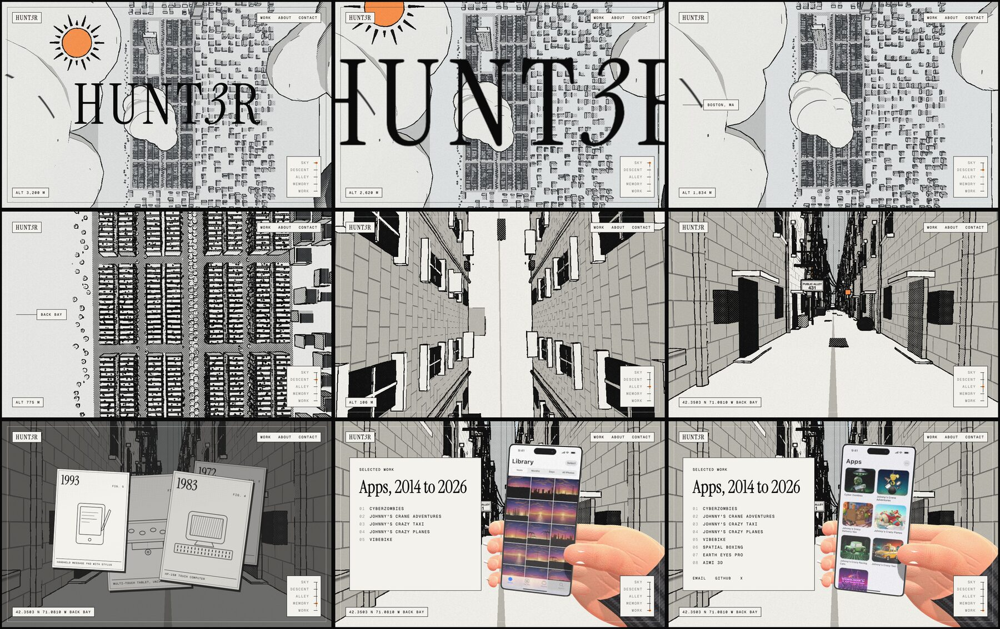

hunt3r.org, first pass, 2026-11-20
The site is a single scroll from 3,200 m above Boston to a phone held at eye height in Public Alley 431. The world is drawn in ink on paper. The phone and the hand are rendered as real objects in colour. The project is at /Users/hunter/Dev/hunt3r.
The wordmark is HUNT3R in Instrument Serif, with the 3 set in italic. Labels are Geist Mono, uppercase, tracked at 0.12em. Chrome sits on small paper labels with a 1 px ink border, like plate captions in a patent filing.
Amber is used for the sun, one lit window, one street lamp and the current-beat dot. Haze tints distant line work. Together they stay under 5% of the frame. Full colour appears only on the phone screen.
Apps, 2014 to 2026
Every world surface uses a three-step cel ramp (paper, mid, ink) with a screen-space halftone in the shadow band. A post pass detects depth and normal edges and draws ink lines with a noise wobble on the weight. Line width scales with depth so distant roofs stay thin. Clouds have their own shader with a grey underside band and short curved strokes. The phone scene is drawn after a depth clear with PBR materials and no edge pass.
| p | Beat | Frame |
|---|---|---|
| 0.00 to 0.14 | Sky | Camera looks straight down through a gap in the cloud deck. The wordmark scales up until the camera passes through it. Readout shows ALT 3,200 M. |
| 0.14 to 0.56 | Descent | Straight fall. Back Bay blocks resolve. Captions pin in turn (BOSTON, MA, then BACK BAY, then PUBLIC ALLEY 431). |
| 0.56 to 0.68 | Alley | Camera drops between brownstone backs and pitch eases from -90 to 0 at 1.6 m. Readout switches to 42.3503 N 71.0810 W. |
| 0.68 to 0.80 | Memory | White flash, then ten patent-plate cards from 1965 to 2010 stack up in a collage. A second flash hands off. |
| 0.80 to 1.00 | Work | The arm rises with the iPhone. Photos library with 14 sunsets, one opens full screen, then the app grid. Contact row at 0.96. |

The hand is procedural geometry with generated skin maps. It reads as soft CG, about a third of the way to a photograph, and it will stay there without a scanned or generated asset. OPENROUTER_API_KEY is unset in this shell, so no image model was available, and no stock scan was on disk.
Either of these closes the gap. The loader already checks for the first.
public/arm/arm.glb with a node named PhoneAnchor. src/phone/index.js loads it in place of the procedural hand when present.cd /Users/hunter/Dev/hunt3r npm run dev # http://localhost:5183 node scripts/shot.mjs tag 0,0.5,1 # stills to notes/shots/tag/ open "http://localhost:5183/?p=0.9&t=3" # pin the timeline
| Path | Holds |
|---|---|
| src/timeline.js | Beat ranges and easing helpers shared by all modules |
| src/world/ | Camera path, cel shader, outline pass, city, alley, clouds |
| src/phone/ | iPhone, hand, skin maps, Photos and app screens, sunset generator |
| src/ui/ | Loader, chrome, captions, montage cards, work list |
| notes/ | CONTEXT.md, visual-log.md, shots |
build: skipped (no Xcode targets; Vite dev server only)